今日发帖数：16 帖（13:20 – 15:39，时间为浏览器本地时区）
今日要点速览
今天的主线非常密集：中国 5 月通胀数据是绝对核心——PPI 同比 +3.9% 超预期，但属于"上游涨、下游传不动"的成本冲击型通胀（巴克莱、长江、广发三家解读）；美国 5 月 CPI 则给出相反信号——核心商品一年多来首次环比下降，关税通胀可能见顶（JPM、大摩）。地缘上，美伊冲突与霍尔木兹海峡仍在搅动油价和美股（zerohedge、高盛/Kalshi）。此外还有几条结构性线索：中国债券收益率"日本化"（FT）、SpaceX 等巨型 IPO 抽水效应（RIA）、全球主权债发行创纪录（zerohedge）、中国财富出海监管收紧（JPM、大摩）、以及房地产持续探底（法拍、二手房挂牌价）。
帖 1（15:39）本科生"回炉"读技校
帖子原文：经济观察报：新趋势乍现，本科生"回炉"读技校 #职业#

一句话核心：越来越多本科毕业生回头去技校学一门手艺，学历溢价在缩水，技能溢价在上升。
背景与关键数据：图中是经济观察报的报道。案例主角"梦源"2023 年经济学本科毕业进了国企，薪资"可观"，但发现"光靠能力没用"，于是今年报了广州轻工技师学院一年制"工业机器人预备技师"班。行业层面的数据更说明问题：全国 105 所技工院校调查显示，开展高校毕业生学制培养的院校从 2023 年的 26 所增至 2025 年的 45 所（+73%），招生规模从 1821 人增至 2462 人；其中招收本科生的院校从 16 所增至 28 所，人数从 401 增至 570。智联招聘调研中 52.2% 的毕业生认为"回炉"后就业机会更多。
图片解读：文章截图，重点标注了"国企""薪资可观"与"潜规则"的反差，以及"回炉"规模虽小但增长趋势明显的调查数据。
为什么重要：这是劳动力市场的结构性信号——白领岗位供给收缩（尤其文科/商科类），而制造业升级（工业机器人、设备维护）的技能岗位缺人。对宏观的含义是：青年就业压力会持续压制服务通胀和租金（与帖 6、帖 8 呼应——就业市场约束了 CPI 里的服务价格）。
延伸知识：经济学里这叫学历信号失灵（signaling breakdown）——当大学文凭无法再有效区分能力时，雇主和求职者都转向更直接的技能认证。类似现象在 90 年代的日本也出现过：泡沫破裂后"就职冰河期"一代大量回流职业学校。可延伸阅读：明瑟方程（Mincer equation）对教育回报率的测算。
帖 2（15:26）FT：债券收益率的"日本化"故事
帖子原文：FT：债券收益率正在诉说日本化的故事 #金融#
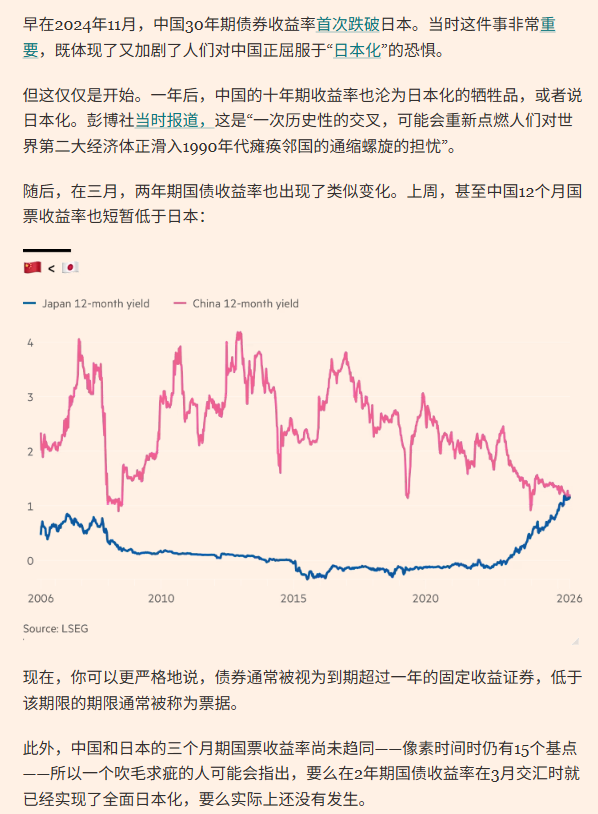
一句话核心：中国国债收益率已经全面逼近甚至跌破日本，市场在用价格投票："中国正在日本化"。
背景与关键数据：2024 年 11 月中国 30 年期国债收益率首次跌破日本，当时被视为标志性事件。随后 10 年期也沦为全球收益率的"洼地"。图表显示：上周连中国 12 个月期国债收益率都已经短暂低于日本——也就是说，从长端到短端，中日利率全面倒挂或接近倒挂。FT 指出只剩 3 个月期票据收益率还略高于日本，若也跌破，就是"全面日本化"。
图片解读：折线图对比 2006–2026 年日本（黑线）与中国（红线）12 个月期国债收益率：中国从 2006 年 3%+ 一路震荡走低，2024 年后加速下行；日本则从 0 附近缓慢爬升。两线在 2025–2026 年交汇。
为什么重要："日本化"= 低增长 + 低通胀（或通缩）+ 低利率的长期组合。债券市场是最"冷血"的定价者——收益率跌破日本意味着市场预期中国的名义增长会长期低迷。这与今天 PPI 转正的数据（帖 6/8/9）形成有趣的张力：上游通胀回来了，但债市并不相信它能传导为持续的名义增长。
延伸知识：资产负债表衰退（辜朝明提出）是理解日本化的关键框架——当企业和家庭都忙着还债而不是借钱扩张，再低的利率也刺激不出信贷需求，利率自然长期趴在地板上。判断中国是否走出这个状态，可以盯两个指标：居民中长期贷款增速、M1 同比。
帖 3（15:24）高盛：Kalshi 对霍尔木兹海峡年底恢复正常的预测
帖子原文：高盛：Kalshi 对年底海峡实现正常化的预测 #金融#
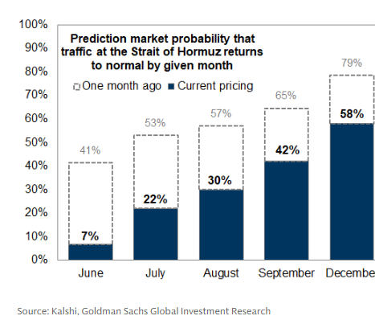
一句话核心：预测市场大幅下调了霍尔木兹海峡航运恢复正常的概率——一个月前还觉得 9 月能解决，现在连 12 月都只给 58%。
背景与关键数据：Kalshi 是美国合规的事件预测市场（用真金白银押注事件概率，通常比专家预测更"诚实"）。高盛引用其数据：海峡航运 6 月恢复正常的概率仅 7%（一个月前 41%）、7 月 22%（前值 53%）、8 月 30%（57%）、9 月 42%（65%）、12 月 58%（79%）。
图片解读：柱状图，实心柱是当前定价，虚线框是一个月前定价。所有月份的概率都被砍了约一半，说明市场认为美伊冲突对航运的干扰会持续更久。
为什么重要：霍尔木兹海峡承载全球约 20% 的石油运输。恢复概率下调=风险溢价更持久地留在油价里（与帖 14 呼应：油价没有飙升是因为特朗普护航+库存释放，但风险并未解除）。对通胀路径、美联储降息节奏都有连锁影响。
延伸知识：预测市场为什么值得看：与分析师观点不同，预测市场参与者有真实盈亏，价格会快速聚合分散信息（"群体智慧"）。2024 年美国大选中 Polymarket/Kalshi 的定价就明显领先于民调。局限是流动性浅的合约容易被大单扭曲。
帖 4（15:19）《经济评论》：降社保缴费的供应链溢出效应
帖子原文：《经济评论》：降低客户企业社会保险缴费（用工成本）可以显著增加供应商企业就业，也可以显著促进供应商企业工资水平与劳动收入份额的提高，缓解内部收入差距。#论文或书籍推荐#
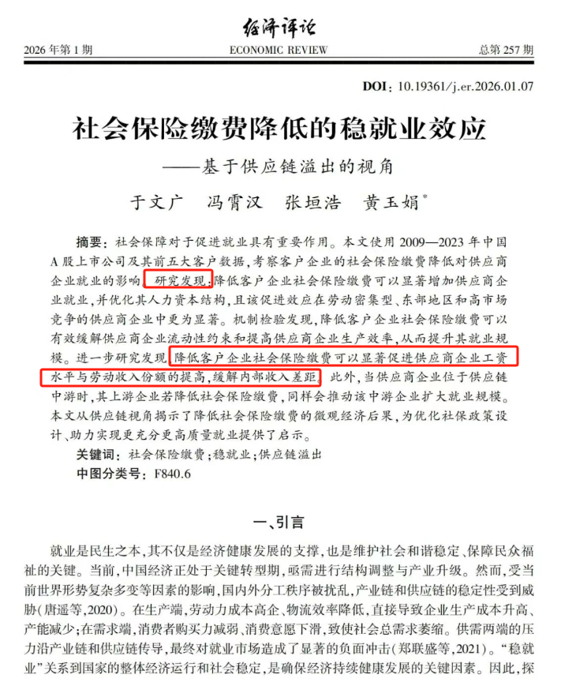
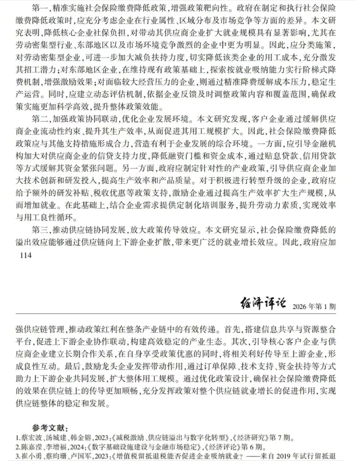
一句话核心：给下游企业减社保负担，好处会沿着供应链向上游"溢出"——上游供应商的就业和工资也跟着涨。
背景与关键数据：这是《经济评论》期刊论文《社会保险缴费降低的稳就业效应——基于供应链溢出视角》。逻辑链条：客户企业用工成本下降 → 经营改善、订单扩张 → 对上游采购增加 → 供应商企业就业、工资、劳动收入份额同步提升。政策含义是：减费降负的乘数效应比直观看到的更大，因为它会沿产业链传播。
图片解读：两张论文页面截图，含摘要与结论部分。
为什么重要：在当前"就业优先"的政策框架下，这类研究为继续阶段性降低社保费率提供了实证弹药。注意与帖 6/8 的联动：就业市场疲弱是服务通胀起不来的核心原因，而社保减负是少数既能稳就业又不直接加杠杆的工具。
延伸知识：**税负归宿（tax incidence）**理论告诉我们：名义上由企业缴的社保，实际负担会在企业利润、工人工资、产品价格之间分摊——分摊比例取决于各方的弹性。这篇论文展示的是另一个维度：负担（或减负）还会沿供应链在企业间转移。
帖 5（15:14）JPM：中国财富管理监管电话会
帖子原文：JPM：我们周一早上举办了一场关于中国财富监管的电话会。投资者最关心两个问题：中国居民未来还能不能继续把钱配置到海外财富管理产品？已经流出去、已经在账户里的钱，会不会受到影响？投资者在等监管进一步清晰，尤其是 ODI（对外直接投资）监管以及它是否适用于个人。#金融#
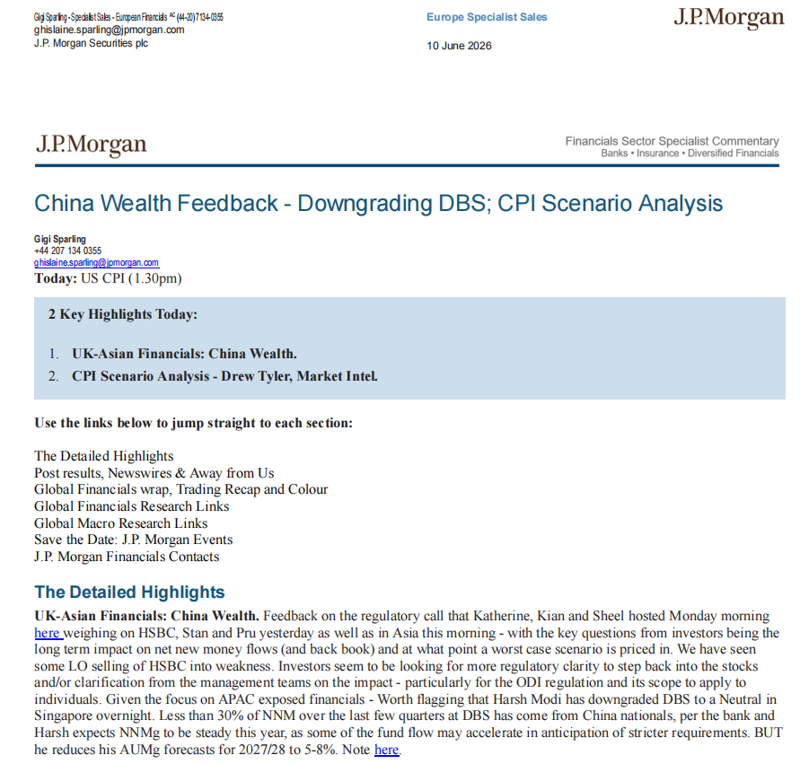
一句话核心：中国居民资金出海的监管正在收紧，市场最担心的是"新钱出不去"和"旧钱被追溯"。
背景与关键数据：背景是近期中国对跨境财富管理业务的监管动作（JPM 同时下调了 DBS 评级，见图中报告标题）。ODI 本来是企业对外投资的审批框架，如果延伸适用于个人或个人借道的结构，意味着居民通过非正规渠道配置海外资产的口子会被扎紧。
图片解读：JPM 报告封面《China Wealth Feedback - Downgrading DBS; CPI Scenario Analysis》，电话会聚焦中国财富监管的投资者反馈。
为什么重要：这与帖 13（大摩）形成完整图景：官方的态度是"正门开着（QDII、跨境理财通等合法渠道），偏门要堵"。对香港财富管理行业（私行、保险、券商）是直接利空；对人民币汇率反而是支撑（资本外流压力下降）。注意帖 7 里那句"也有一些经济体收紧了对外投资的通道，有意思"——Jason 在暗示中国资金可能错过这轮海外优质资产盛宴。
延伸知识：资本管制的"不可能三角"：独立货币政策、汇率稳定、资本自由流动三者只能取其二。中国选择了前两者，所以资本账户开放永远是"管道式"的——开正门、关后门、额度管理。理解了这个框架，就能看懂 QDII 额度（帖 13 图：1761.69 亿美元）为什么是个政策信号变量。
帖 6（15:03）巴克莱：上游成本冲击型通胀
帖子原文：巴克莱：中国 5 月数据再次提示这是上游成本冲击型通胀。企业无法顺利把上游成本传导到下游。生活资料 PPI 5 月仍为 -0.8%。我们认为中下游制造业利润率会被挤压，所以居民消费端没有明显通胀。越靠上游，涨价越明显；越靠终端，价格越弱。汽油价格同比从 4 月的 19.3% 升至 5 月的 23.5%，对 CPI 贡献从约 0.56 个百分点升至约 0.66 个百分点。5 月统计局口径住房租金同比下降 0.6%，仍是 2023 年 1 月以来最快下降速度附近。#经济数据#
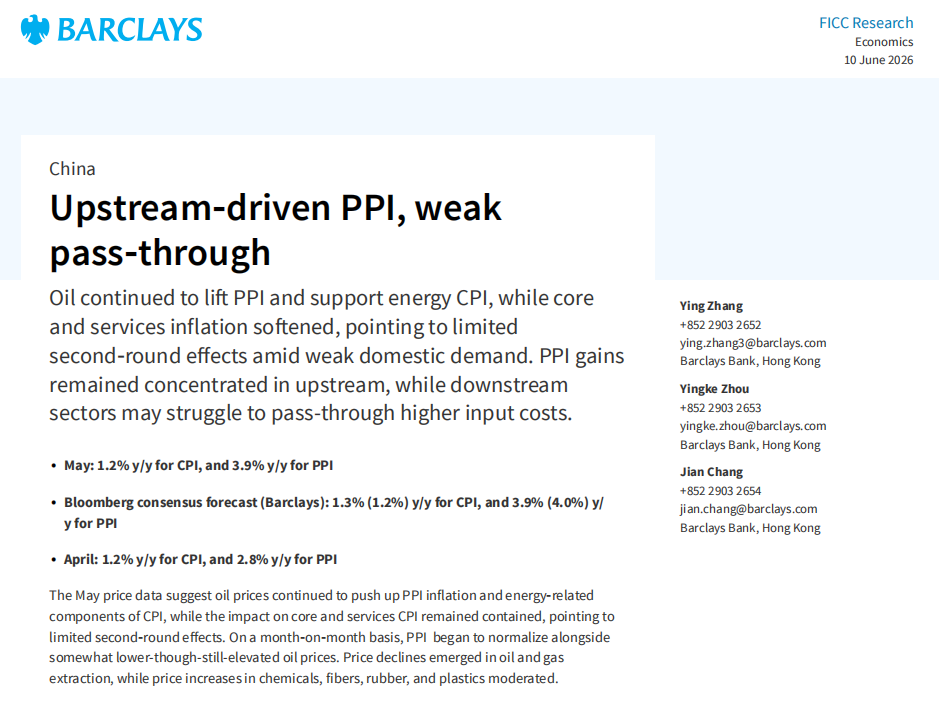
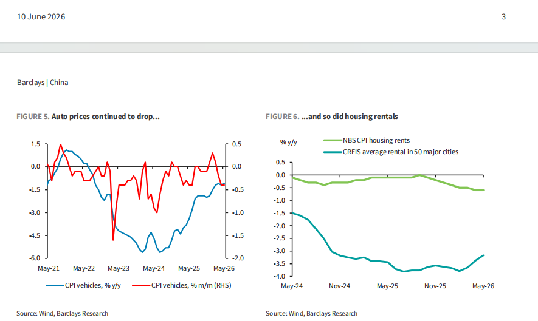
一句话核心：5 月通胀是"油价推上来的"，不是"需求拉上来的"——上游涨价传不到消费端，中下游利润反而被挤压。
背景与关键数据：5 月 CPI 同比 +1.2%、PPI 同比 +3.9%（4 月分别为 +1.2%、+2.8%）。关键的结构信息：生活资料 PPI 仍是 -0.8%（负的！），说明涨价全部集中在生产资料（上游原材料、能源）；汽油同比 +23.5%，独自贡献了 CPI 的 0.66 个百分点（占整个 CPI 涨幅的一半以上）；住房租金同比 -0.6%，接近 2023 年以来最快跌速。
图片解读：第一张是巴克莱报告首页《Upstream-driven PPI, weak pass-through》（上游驱动的 PPI、疲弱的传导），列出 CPI/PPI 关键数字。第二张两个图：左图汽车 CPI 同比仍在 -1.5% 附近（车价还在跌）；右图房租——统计局口径同比约 -0.6%，而中指院（CREIS）50 城实际租金同比一度 -3.7%，近期收窄到约 -3.2%，市场化口径跌得比官方口径深得多。
为什么重要：这种通胀结构对企业盈利是坏消息（中下游毛利被挤），对居民是中性偏坏（油价涨但工资没涨），对债市是偏多（核心需求仍弱，央行不必收紧）。这正好解释了帖 2 的"日本化"定价为什么和 PPI 转正并存。
延伸知识：判断通胀性质的经典框架：成本推动 vs 需求拉动。区分方法很简单——看"量"：需求拉动型通胀伴随销量、就业、工资同涨；成本推动型则是价涨量缩、利润率受挤。后者通常不可持续，央行一般会"看穿"它（look through）而不加息。
帖 7（14:59）RIA：SpaceX IPO 热潮会不会抽干美股流动性？
帖子原文：RIA：SpaceX 的 IPO 热潮，会不会影响美股其他估值？这要看 SpaceX 的天量筹资会从哪里来。但毫无疑问，优质资产会吸引全球资金，关键看吸引的量是否足够，不然就会影响池子里原本的其他企业估值。机构带来的消息是，沙特公共投资基金和科威特投资局各自已下达价值 10 亿至 50 亿美元的 IPO 订单，卡塔尔投资局也预计将做出同样的采购。但也有一些经济体收紧了对外投资的通道，有意思。#金融#
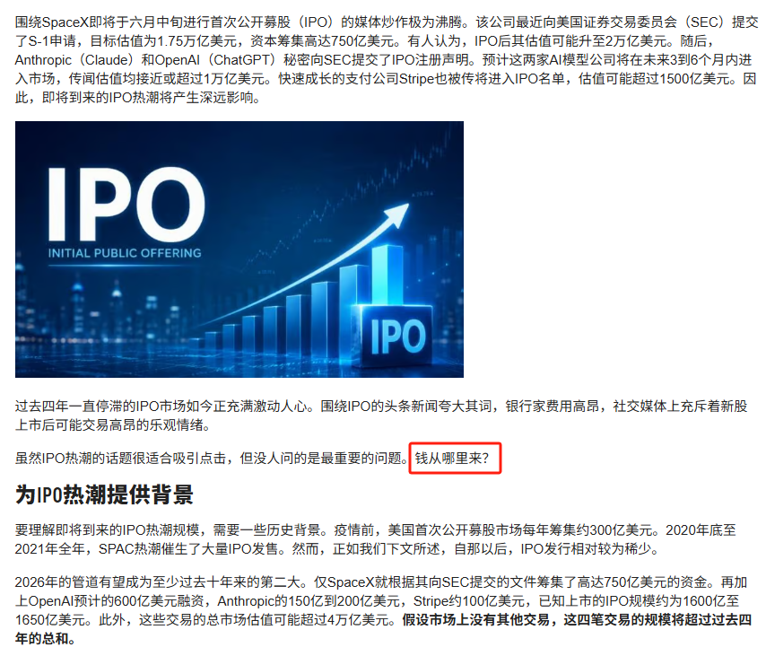
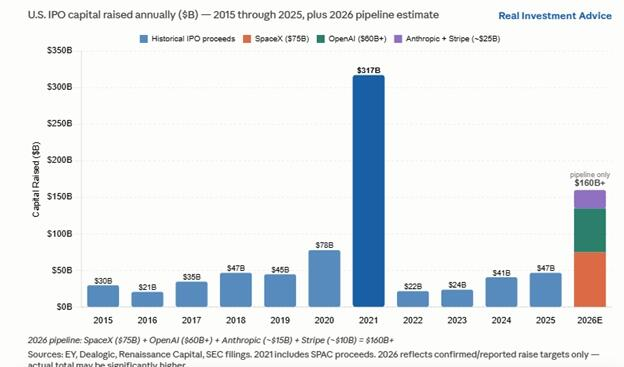
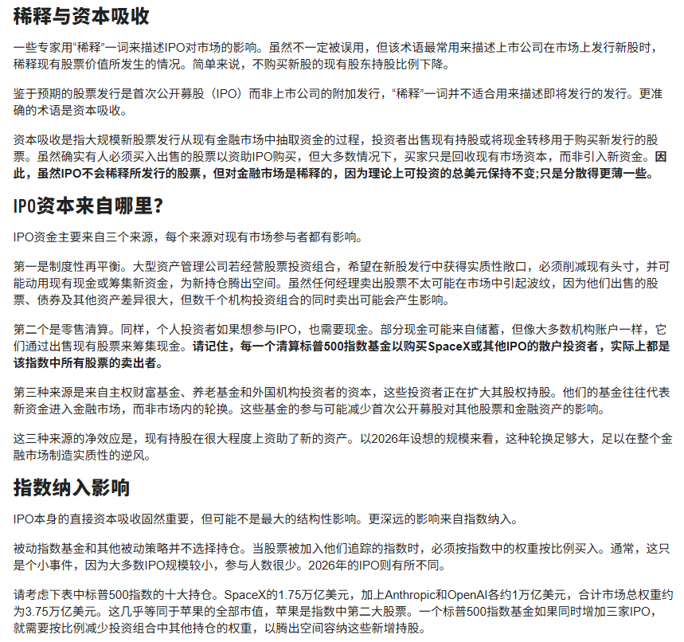
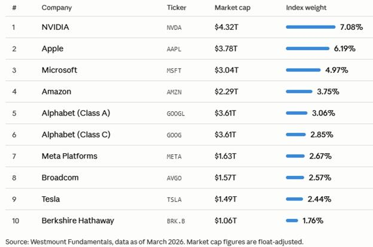
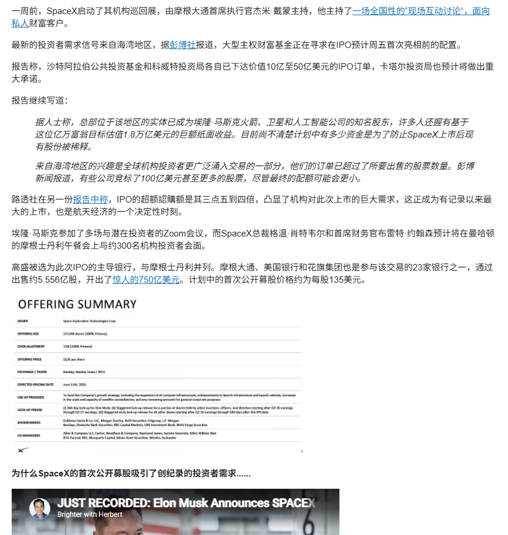
一句话核心：2026 年 SpaceX + OpenAI + Anthropic + Stripe 的 IPO 管线超过 1600 亿美元，是常年水平的 3-4 倍——这笔钱要么从全球新增资金来，要么从存量美股里抽。
背景与关键数据：图中数据：2015–2025 年美国 IPO 年融资额多在 200–500 亿美元（2021 年 SPAC 狂潮例外，3170 亿）；而 2026 年仅已确认的管线就有 1600 亿+：SpaceX 750 亿、OpenAI 600 亿+、Anthropic 约 150 亿、Stripe 约 100 亿。需求端：中东主权基金（沙特 PIF、科威特 KIA 各下单 10–50 亿美元，卡塔尔 QIA 跟进）成为关键边际买家。
图片解读：图 2 是核心——历年 IPO 融资柱状图，2026E 那根彩色柱（管线构成）一眼看出异常；图 5 是标普前十大权重股（NVDA 7.08%/4.32 万亿、AAPL 6.19%/3.78 万亿、MSFT 4.97% 等，2026 年 3 月数据），说明如果 SpaceX/OpenAI 上市后进指数，会从这些股票里"分权重"；其余为文章正文和 Musk 宣布截图。
为什么重要：流动性是估值之母。巨型 IPO 的"抽水效应"（crowding out）历史上多次出现：1999-2000、2021 年都是 IPO 供给见顶 ≈ 市场见顶。但这次的变量是全球主权财富基金的新钱——如果外部资金足够，抽水效应被中和。Jason 那句"有意思"指向中国收紧出海通道（帖 5/13），等于主动退出这场盛宴。
延伸知识：股票市场的供需会计：股价上涨需要净买入，而 IPO、增发、内部人减持是"供给"，回购、分红再投资、新流入是"需求"。可以把 IPO 管线/总市值比作"稀释率"盯起来。另外留意：SpaceX/OpenAI 若上市，标普 500 的"AI 含量"将进一步上升，指数本身越来越像一只 AI 主题基金。
帖 8（14:50）广发：模拟 GDP 平减指数创 2022 年 9 月以来新高
帖子原文：广发：按照 CPI 和 PPI 分别 60%、40% 粗略估算 5 月的模拟 GDP 平减指数为 2.28%，创 2022 年 9 月以来最高。CPI 整体仍属于波澜不惊的温和同比上涨。5 月环比 -0.1%，略强于历史均值的 -0.2% 左右。PPI 对 CPI 存在一定传导，但整体来看，目前传导效应较弱。租金、服务价格往往是 CPI 上行的放大变量，但两者目前分别受房地产市场、就业市场的约束。实体体感可能弱于宏观财政，PPI 会推升企业利润，即使只在上游，也会收获更多的间接税。名义 GDP 修复也会变相提升债务增量空间。#经济数据#
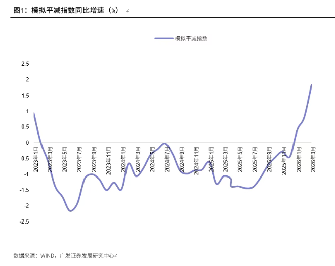
一句话核心：用 CPI 和 PPI 加权估算的"物价总水平"已转正至 2.28%，名义 GDP 在修复——这对财政和债务可持续性是好消息，哪怕老百姓体感不明显。
背景与关键数据：GDP 平减指数（deflator）是覆盖整个经济的物价指标，比 CPI 更全面。中国的平减指数从 2023 年起连续多个季度为负（名义增长低于实际增长，即"通缩"状态）。广发用 CPI×60% + PPI×40% 模拟，5 月达到 +2.28%，是 2022 年 9 月以来最高。关键逻辑：名义 GDP 修复 → 税基扩大（尤其上游利润带来的增值税等间接税）→ 同样的债务/GDP 红线下，债务增量空间变大。
图片解读：广发的模拟平减指数曲线：2023 年中最低探至约 -2.2%，此后在 -1.5% 至 -0.5% 区间徘徊两年，2025 年末开始陡峭拉升，2026 年 3 月后冲上 +1.8% 以上。
为什么重要：对资产价格而言，名义量比实际量更重要——企业收入、利润、税收、债务偿还能力都是名义值。平减指数转正意味着"通缩螺旋"的尾部风险下降。但注意巴克莱的提醒（帖 6）：这轮名义修复靠上游，中下游和居民端的体感会明显滞后，"宏观暖、微观冷"。
延伸知识：**名义 GDP 目标制（NGDP targeting）**是一派经济学家主张的货币政策框架——央行不盯通胀而盯名义增长。中国语境下，名义 GDP 增速直接决定 A 股盈利增速中枢和财政收入增速，是比实际 GDP 更值得跟踪的单一指标。
帖 9（14:40）长江：PPI 超预期，但传导依然不畅
帖子原文：长江：5 月国内 PPI 同比 +3.9%，高于市场预期（+3.5%）；环比 +0.5%，已连续 8 个月上涨，涨幅有所回落。生产资料同比续升，生活资料同比降幅收窄。从上中下游来看，上游制造、上游采选公用事业同比继续回升，中游制造、下游制造同比转弱，指向上游对于中下游的价格传导依然不畅。#经济数据#
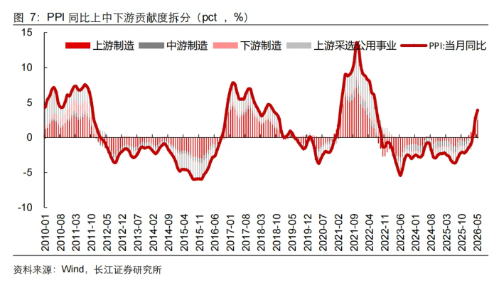
一句话核心：PPI 超预期主要靠上游，中下游同比反而转弱——和巴克莱（帖 6）的结论互相印证。
背景与关键数据：PPI 环比已连涨 8 个月，这在 2021 年之后是第一次。但拆开看，全部动能来自上游采选、公用事业和上游制造（油、煤、有色、电力），中游和下游制造业的同比贡献在走弱。
图片解读：长江证券的 PPI 贡献度拆分图（2010–2026）：红色柱（上游制造）+灰色柱（上游采选公用事业）是本轮的主导，红线（PPI 当月同比）冲上 4% 附近；与 2017、2021 年两轮 PPI 高峰的结构类似——那两轮最终也都没有完全传导到 CPI。
为什么重要：三家券商（巴克莱/广发/长江）从不同角度看同一组数据，结论高度一致：这是再通胀的早期形态，但不是健康的需求复苏。投资上的映射：利好上游资源股（煤炭、有色、石化），利空依赖原材料采购的中下游制造（家电、汽车零部件），消费股暂时无关。
延伸知识：PPI 向 CPI 的传导链通常需要 2-3 个季度，且依赖中间环节有定价权。中国制造业产能过剩时，中间商只能自己消化成本（利润率下降），传导就会"断链"。观察传导是否打通的先行指标：核心 CPI 环比、以及 PMI 出厂价格指数与购进价格指数的差值。
帖 10（14:37）zerohedge：全球主权债发行创上半年纪录
帖子原文：zerohedge：随着公共支出激增，各国政府正以创纪录的速度从市场借款。主权发行人今年迄今已出售了 5040 亿美元的债券——这些债务通过银行向投资者出售——创下新纪录。比 2020 年同期还多。人口老龄化和利率上升加剧了压力。丹麦银行表示债券供应的主要驱动力基本上是公共支出的增加，军事、基础设施和向清洁能源转型的投入增加。#金融#
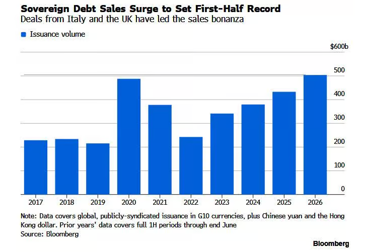
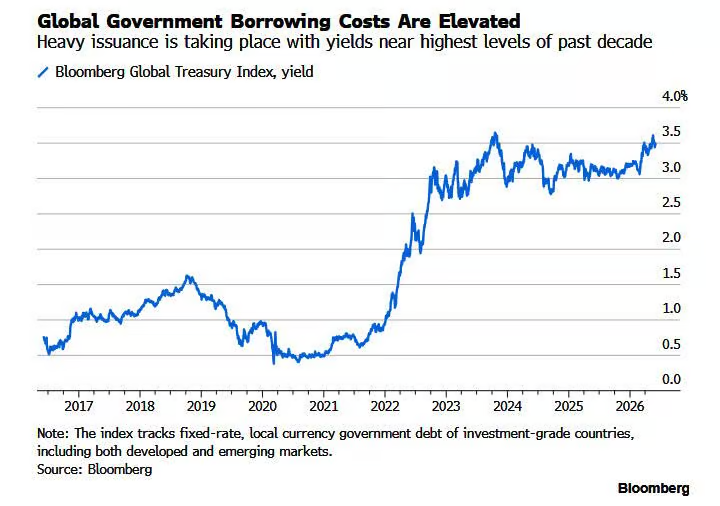
一句话核心：各国政府今年借钱的速度比疫情那年还猛，而且是在利率处于十年高位时借——利息负担会滚雪球。
背景与关键数据：2026 年上半年 G10 货币（+人民币、港币）主权银团债发行 5040 亿美元，超过 2020 年（疫情财政大放水年份）同期，意大利和英国领衔。驱动因素不是危机救助，而是结构性支出：国防（欧洲再武装）、基建、能源转型，叠加老龄化的社保医疗开支。
图片解读：图 1（Bloomberg）：2017–2026 年上半年发行量柱状图，2026 年约 4900 亿+ 创新高，超过 2020 年；图 2：彭博全球国债指数收益率约 3.4%，处于过去十年最高区域——"史上最贵的借钱时点遇上史上最大的借钱需求"。
为什么重要：主权债供给激增 + 高收益率 = 期限溢价（term premium）持续上行的压力。这是压制全球长债价格的结构性力量，也解释了帖 11 里"CTA 对美债各期限都是空头"。对股市的传导：无风险利率高企 → 高估值资产（成长股）的贴现率压力。这也是"财政主导"（fiscal dominance）时代的核心特征。
延伸知识：债券义警（bond vigilantes）：当投资者认为政府财政不可持续时，会通过抛售国债推高收益率来"惩罚"政府——2022 年英国 Truss 政府的迷你预算危机就是教科书案例。观察指标：30 年期国债拍卖的尾部利差（tail）和投标倍数。
帖 11（14:33）JPM：市场在同时交易四条线
帖子原文：JPM：金融市场不是简单交易"战争""通胀"或"降息"，而是在同时交易四条线：地缘风险有没有真的推高油价；CPI 是否支持美联储降息；科技股拥挤交易是否继续出清；黄金是否还能靠通胀和避险逻辑上涨。这四条线目前都不简单。本次美国 CPI 最亮眼的数据点是：核心商品价格下降 0.1%，为一年多以来首次下降。这意味着，过去市场最担心的"关税推升商品通胀"可能正在见顶或减弱。或许美联储对"关税二次通胀"的担忧会下降。但问题是，服务通胀仍然粘。这会继续拖着美联储。黄金的崩跌是当前最有意思的宏观故事之一。通常来说，通胀高会推高黄金，但这个关系已经完全脱钩。在 1 月创下历史新高后，即便通胀上升，黄金却已经下跌超过 20%。因为现在黄金下跌有几条力量共同作用。比如一些央行十个月以来首次转为黄金净卖方……当前黄金关键支撑位在当前市场下方约 4000 美元/盎司附近。CTA 仓位表对黄金是空头，对美股是多头，对美债各期限都是空头，意味着美联储仍偏鹰，通胀仍不够低，美债收益率下行空间受限。所以市场当前组合是：股票趋势资金仍多，但内部轮动；债券趋势资金仍空；黄金趋势破位；美元和实际利率压制黄金。指数下跌也不一定代表市场全面崩盘。这就是一个"相关性重定价"的市场。#金融#
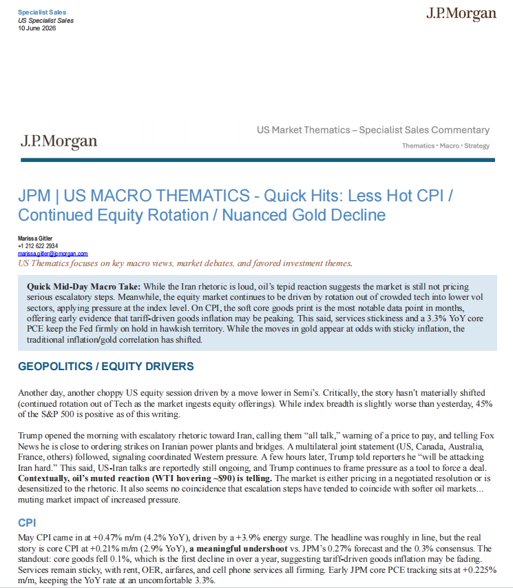
一句话核心：美国 CPI 里关税通胀见顶（核心商品转跌）但服务通胀仍粘；黄金从历史高点崩跌 20%+，传统"通胀-黄金"关系失效——这是一个相关性被重新定价的市场。
背景与关键数据：核心商品价格环比 -0.1%，一年多来首次下降——直接削弱"关税 → 商品通胀"的担忧。黄金 1 月创历史新高后已跌超 20%（技术性熊市），关键支撑约 4000 美元/盎司；部分央行十个月来首次转为净卖方。CTA（趋势跟踪基金）仓位：美股多、美债空、黄金空。
图片解读：JPM 报告《Quick Hits: Less Hot CPI / Continued Equity Rotation / Nuanced Gold Decline》首页——标题三个短语正好对应通胀、股票轮动、黄金三条线。
为什么重要：对资产配置的启示很直接：① 关税通胀见顶 → 美联储降息窗口可能重开（利好久期资产）；② 但服务通胀粘 + CTA 美债空头 → 收益率下行有顶；③ 黄金破位 + 央行转卖 → 这轮黄金牛市的"央行购买"叙事出现裂缝，4000 美元是关键观察位；④ "指数跌 ≠ 全面崩盘"——内部轮动（科技 → 价值/防御）才是主旋律。
延伸知识：相关性重定价（correlation repricing）：资产间相关性不是常数。例如"通胀涨 → 黄金涨"成立的前提是实际利率下行；当通胀涨但名义利率涨得更快（实际利率上行）时，黄金反而跌。组合管理上，依赖历史相关性的风险平价（risk parity）策略在这种时期最容易失血。
帖 12（14:26）花旗："六大网络"落地，AI 数据中心和电网挑大梁
帖子原文：花旗：中国政策正在加速落地，用"六大网络"投资稳住固定资产投资下滑，其中 AI 数据中心和电网是最重要的新抓手。融资不是问题，资金来源包括一般预算、特别国债、政策性金融工具和政府引导基金。真正的问题是：这不是全面复苏，而是新经济投资带动的 K 型复苏。背景是 4 月累计固定资产投资增速已经转负，虽然 GDP 表面增长还稳，但投资端压力很大。这提高了政策稳投资的紧迫性。由于居民需求在 K 的下端，国内信贷需求仍低，固定资产投资广泛回升可能还需要更久。#经济数据#
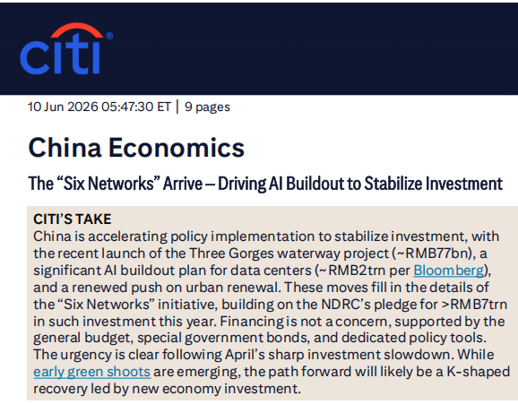
一句话核心：稳投资的钱和项目都有了（三峡水运 770 亿、AI 数据中心约 2 万亿、发改委承诺超 7 万亿），但这是新经济单腿驱动的 K 型复苏，不是全面回暖。
背景与关键数据：花旗报告《The "Six Networks" Arrive – Driving AI Buildout to Stabilize Investment》：近期落地的有三峡水运新通道（约 770 亿人民币）、数据中心 AI 建设计划（彭博口径约 2 万亿）、城市更新。这些填充了发改委"六大网络">7 万亿投资承诺的细节。背景是 4 月累计固定资产投资增速转负——这是罕见的弱（疫情外历史少见）。
图片解读：花旗报告首页，Citi's Take 段落概括了上述要点，并明确用了"K-shaped recovery"（K 型复苏）的表述。
为什么重要：K 型复苏 = 上面那一撇（AI、电网、新基建相关行业）景气向上，下面那一捺（地产链、传统消费、中小企业）继续向下。资本市场已经在按这个剧本定价：算力、电力设备强势，消费、地产弱势。需要警惕的是：当 GDP 总量被新经济撑住时，政策对下面那一捺的刺激紧迫性反而下降。
延伸知识：公共投资的挤入 vs 挤出：政府投资若投向私人部门不愿投的领域（电网、算力底座），可以"挤入"配套私人投资；若与私人部门抢资源，则是"挤出"。判断标准之一是看产能利用率——在需求不足时挤入效应占优。中国这轮 AI 基建更像 90 年代美国信息高速公路计划的翻版，值得对照研究。
帖 13（14:21）大摩：美联储政策立场对中国的含义
帖子原文：摩根斯坦利：美国经济未来两年不是靠消费，而是靠 AI 相关资本开支支撑；美联储只有在通胀"听话"的情况下才会降息。对中国来说，美元走势仍主导 USDCNY，但人民币篮子有温和升值空间。预估美债收益率短期可能仍高，但后面会缓慢下行，2026 年 2 季度约 4.45%，到 2026 年底约 4.25%，到 2027 年底约 4.15%，对人民币和港股估值有支撑。#金融#
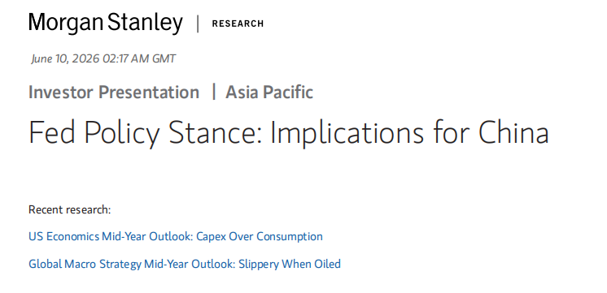
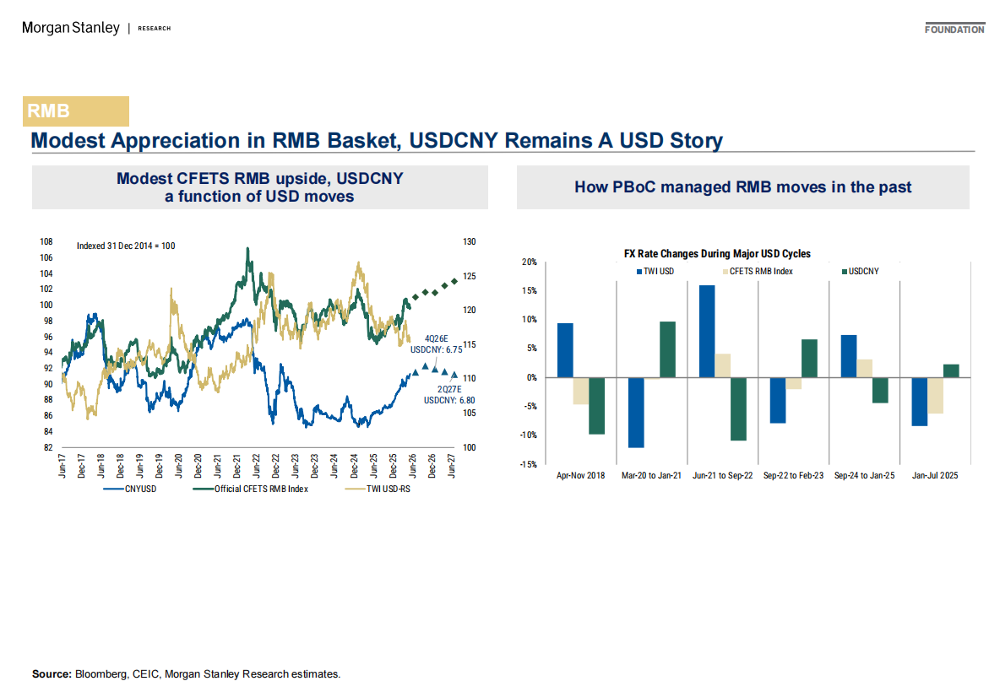
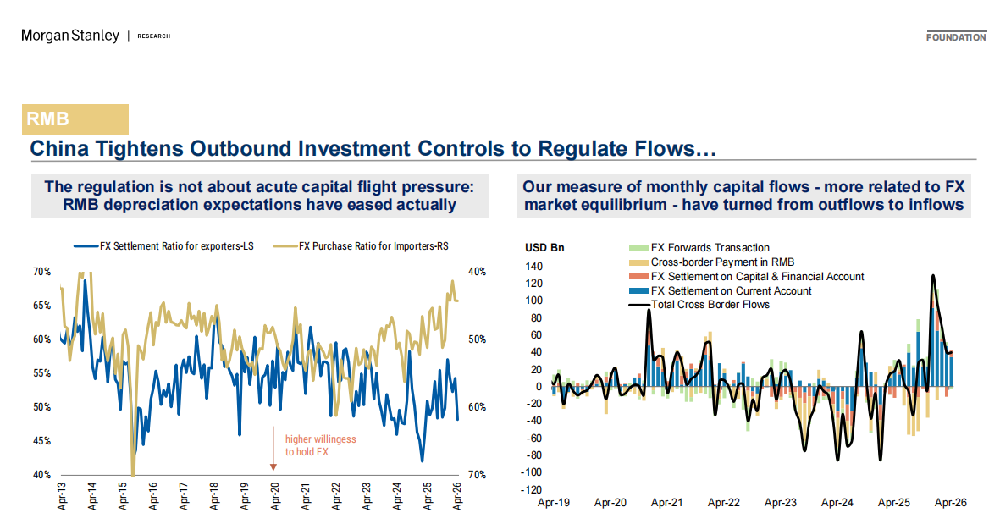
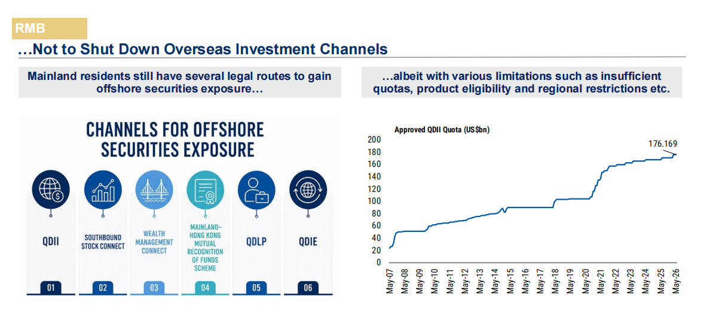
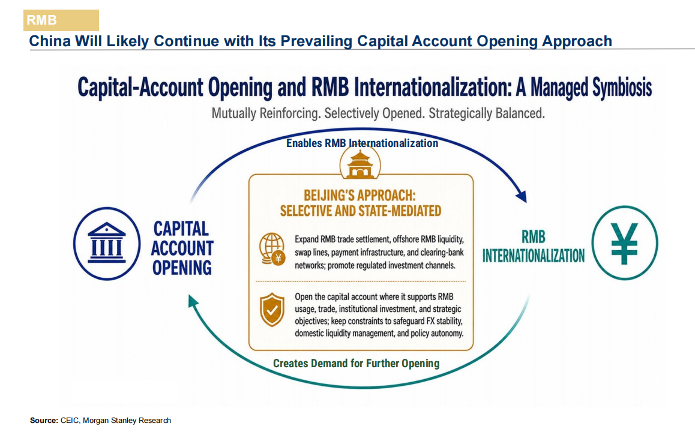
一句话核心：大摩给出美债收益率缓慢下行的路径（4.45% → 4.25% → 4.15%），人民币温和走强（4Q26 预测 USDCNY 6.75），并系统梳理了中国"管道式"资本账户开放的全貌。
背景与关键数据：核心判断：① 美国增长引擎是 AI 资本开支而非消费（与帖 7 的 IPO 热潮同源）；② 美联储是"数据的奴隶"，通胀不听话就不降息（与帖 11 服务通胀粘呼应）；③ USDCNY 预测：4Q26 约 6.75；④ 中国收紧对外投资管控不是因为急性资本外逃——贬值预期实际上已缓解，月度资本流已从流出转为流入；⑤ QDII 批准额度约 1761.69 亿美元，多年缓慢爬升。
图片解读：图 2：CFETS 人民币篮子温和上行的预测路径（虚线），USDCNY 4Q26E 6.75；图 3：出口商结汇率与进口商购汇率显示贬值预期缓和，右图月度跨境资本流 2025-2026 年转为净流入（蓝柱向上）；图 4：居民海外配置的六条合法通道（QDII、南向通、跨境理财通、基金互认、QDLP、QDIE）+ QDII 额度爬升曲线；图 5："资本账户开放与人民币国际化是受管理的共生关系"框架图。
为什么重要：这是今天信息密度最高的一帖，把帖 5（财富监管）放进了大框架：监管收紧是主动的制度化管理，不是危机应对。对投资的含义：人民币温和升值 + 美债收益率缓降 = 港股估值的双重支撑（分母端改善）；同时合法出海通道（QDII 额度、南向资金）会成为政策"阀门"，值得作为高频信号跟踪。
延伸知识：汇率的"篮子思维"：USDCNY 涨跌可能只是美元自身波动（分子），看人民币真实强弱要看 CFETS 篮子指数（对一篮子货币）。大摩的判断翻译过来就是：美元弱 → USDCNY 数字变小（升值），但人民币对篮子只温和升——即央行会让人民币"跟着美元弱一起弱一半"，保出口竞争力。
帖 14（14:08）zerohedge：伊朗局势——护航、库存与"即将的袭击"
帖子原文：zerohedge：特朗普称最近的"秘密军事任务"让 200 艘船只、1 亿桶石油通过了霍尔木兹海峡，这是为什么油价没有飙升的原因。目前美国原油库存贴着 2014 年的低点，同时钻机数量持续上升，美国原油产量接近历史新高。特朗普表示再次打击伊朗，情绪导致科技股下跌，标普 500 指数跌至五周低点，基准指数下跌 1.6%。#金融#
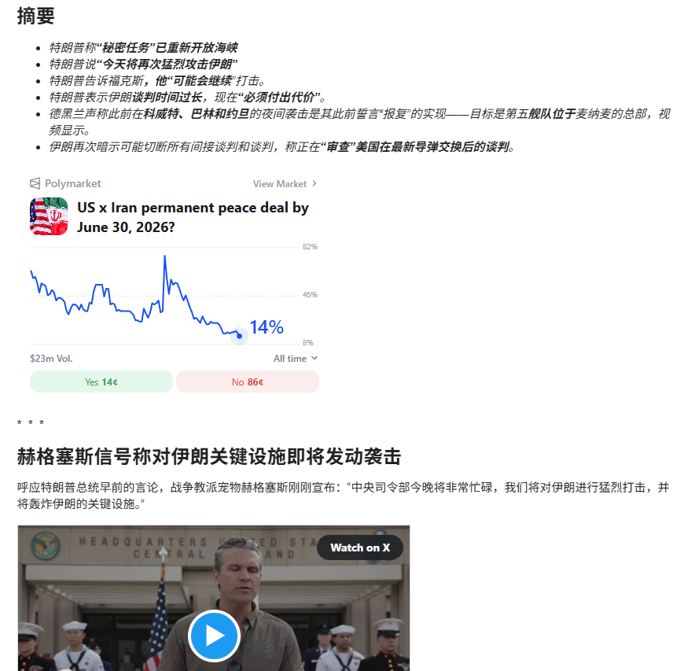
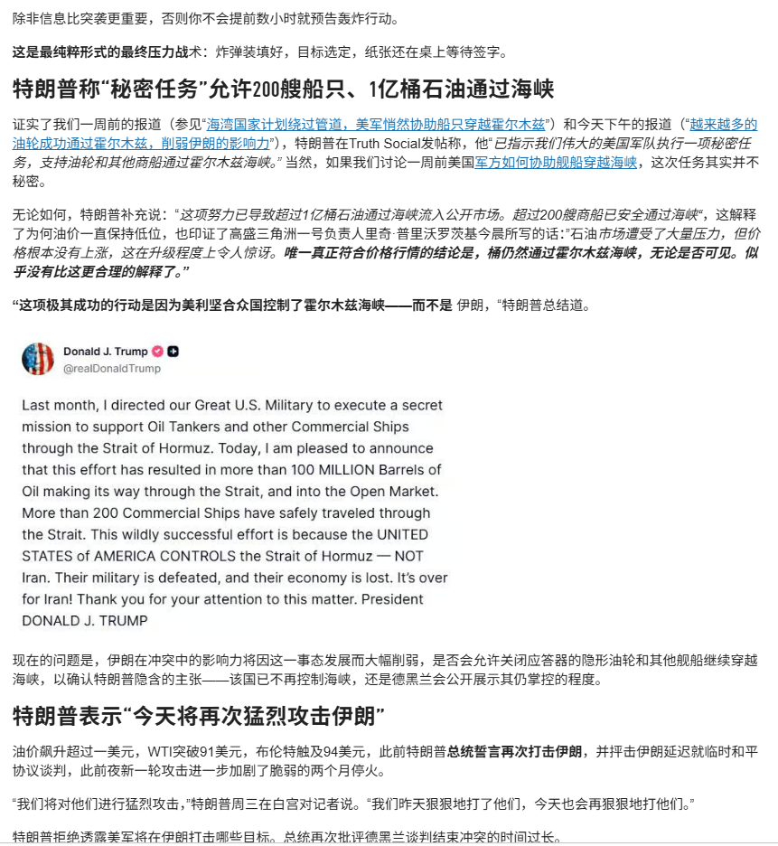
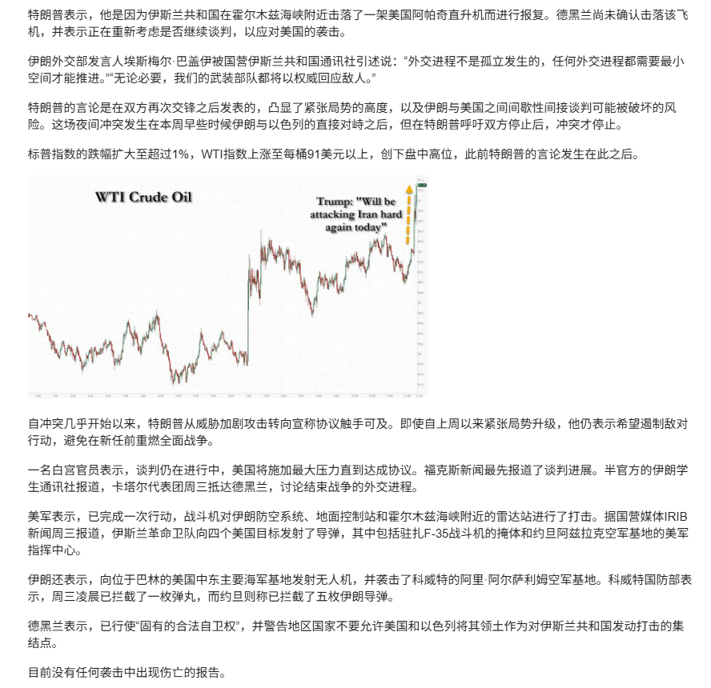
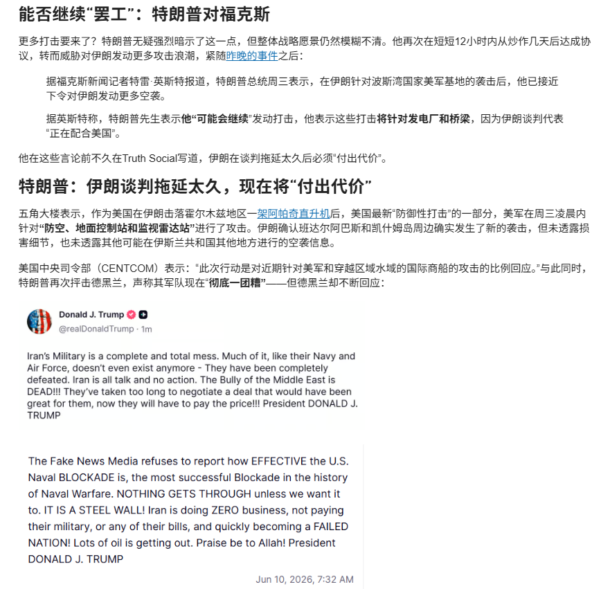
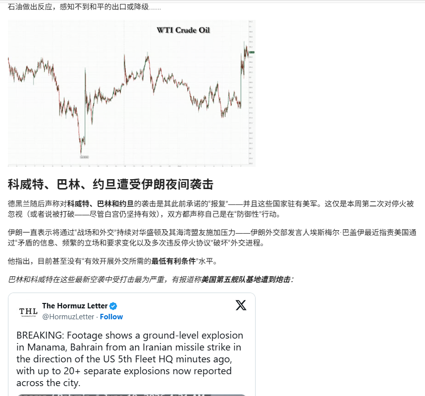
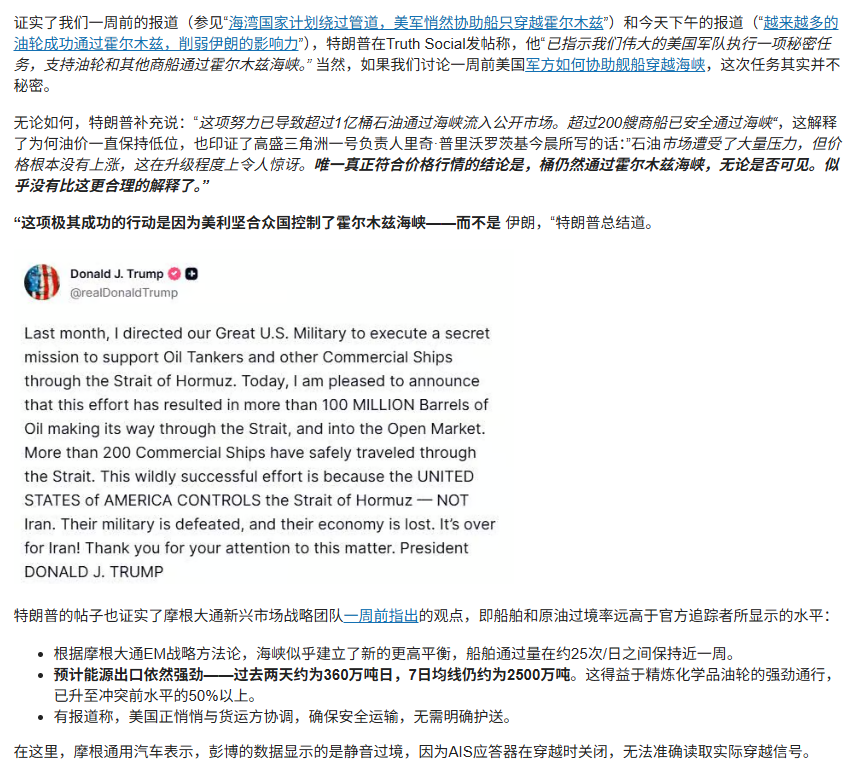
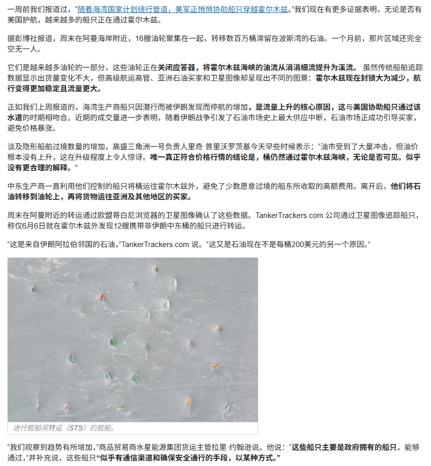
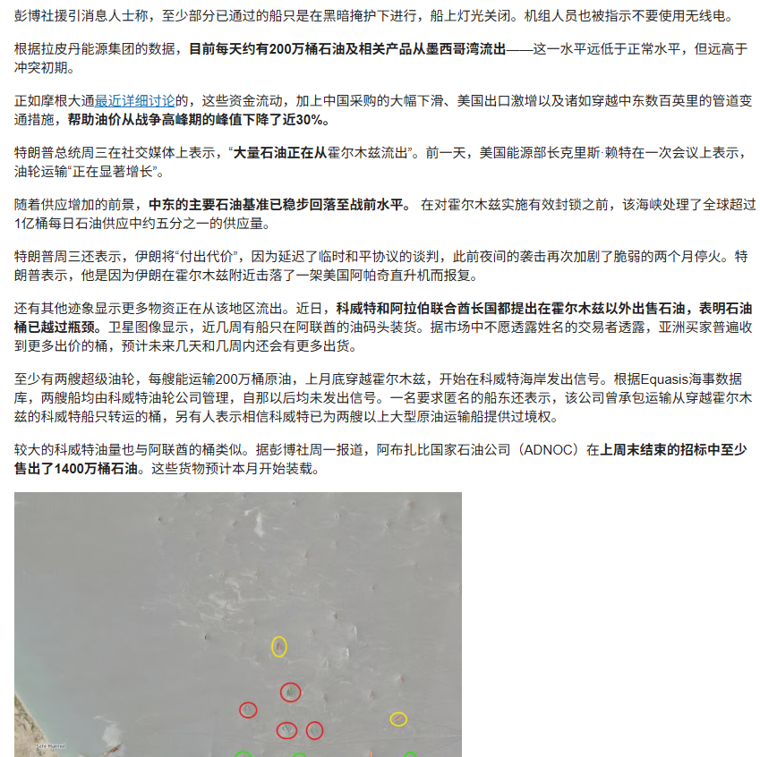
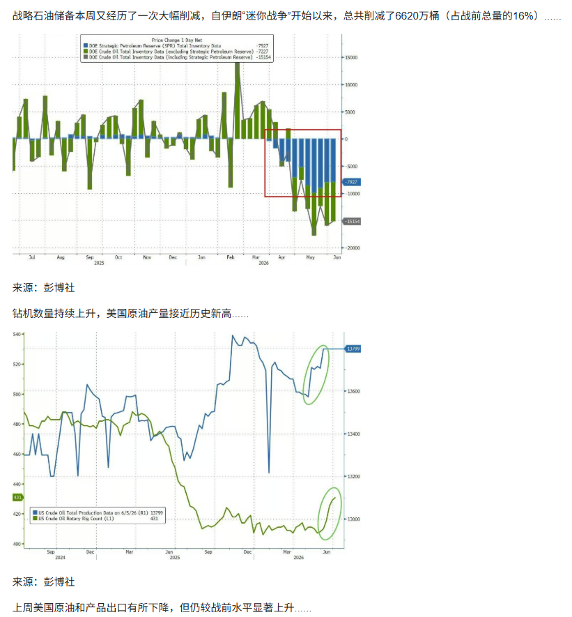
一句话核心：油价之所以"按住没飙"，靠的是美军护航 + 战略储备（SPR）放量 + 美国自产新高这三根柱子——但 Polymarket 只给美伊 6 月底前和平协议 14% 的概率，袭击警告还在升级。
背景与关键数据：要点拼图：① 特朗普自述"秘密军事任务"护航 200 艘船、1 亿桶油过海峡；② 防长赫格塞斯（Hegseth）公开警告将对伊朗关键设施"即将发动袭击"；③ Polymarket"美伊 6 月 30 日前达成永久和平协议"概率仅 14%；④ SPR 自"迷你战争"开始已释放 6620 万桶（约占战前总量 16%），本周又大幅削减；⑤ 对冲力量：钻机数持续上升、美国原油产量接近历史新高；⑥ 市场反应：标普 -1.6% 至五周低点，科技股领跌。
图片解读：图 1：摘要 + Polymarket 和平协议概率曲线（跌至 14%）+ 赫格塞斯袭击警告；图 2/4/6：特朗普 Truth Social 原帖（护航任务、"伊朗的封锁是历史上最严重的错误"等）；图 3/5：WTI 油价走势与伊朗夜间爆炸报道；图 7：油轮现场图（海峡通行实况）；图 8：分析正文（含 ADNOC 相关航运动态）；图 9：上图 SPR 库存大幅下降（红框处断崖），下图钻机数回升 + 原油产量逼近历史新高，出口略降但高于战前。
为什么重要：这是一个人为压制波动率的油市：供给端风险（袭击、海峡封锁）真实存在，但被护航+SPR+页岩增产暂时对冲。脆弱点在于 SPR 是有限弹药（已用掉 16%），如果冲突升级到袭击伊朗出口设施或海峡真正中断，油价的"补涨"会非常剧烈。与帖 3（Kalshi 海峡正常化概率腰斩）相互印证：市场认为这是持久战。对股市，油价 = 通胀预期 = 美联储路径，这是帖 11"四条线"的第一条。
延伸知识：SPR（战略石油储备）的政治经济学：SPR 本是应对供给中断的保险，但近年越来越像"平抑油价的政策工具"（2022 年拜登释放 1.8 亿桶）。问题是储备放完需要低价回补，反而在未来制造买盘。盯油市结构可以看月差（time spread）：现货升水（backwardation）加深 = 现货紧张，与库存数据互为验证。
帖 15（13:22）中指院：法拍房挂拍量增、成交额降
帖子原文：中指院：1-5 月全国法拍市场各类法拍房源累计挂拍数量 39.5 万套，同比增加 19.6%，总成交金额 1243.9 亿元，同比下降 14.1%。各类法拍房源成交均价 5174 元/㎡，同比增长 0.5%，平均成交折价率为 73.2%。#房价#
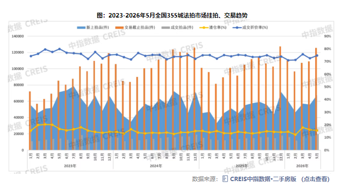
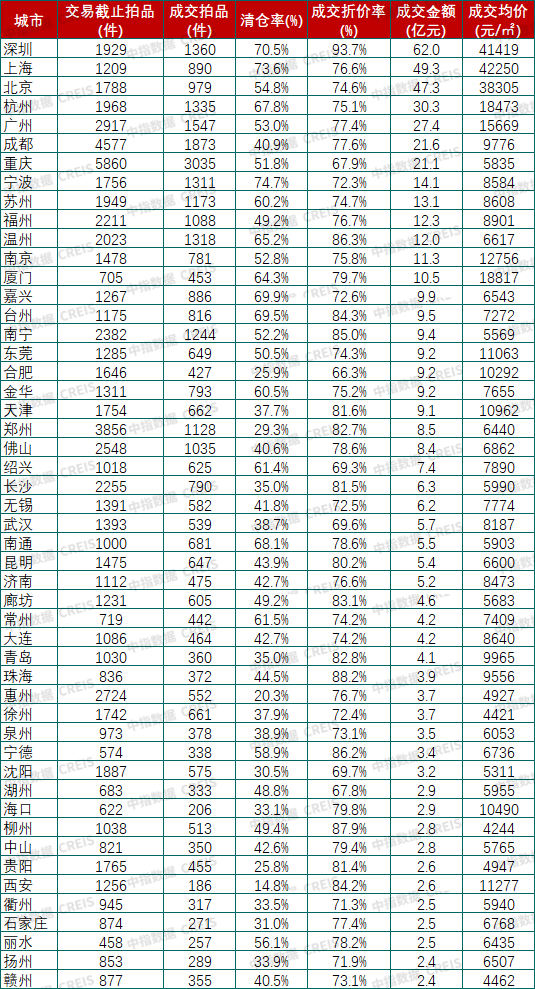
一句话核心：法拍房供给大增 19.6% 但成交金额反降 14.1%——断供/违约还在增加，而接盘的钱在减少。
背景与关键数据：法拍房是观察居民部门资产负债表压力的"后视镜"：挂拍量 +19.6% 说明违约处置还在上升通道；成交金额 -14.1% + 折价率 73.2%（即平均按评估价 7.3 折成交）说明买方出价能力/意愿不足。均价 5174 元/㎡ 同比 +0.5% 基本持平，但这受成交结构（城市组合）影响大，参考意义有限。
图片解读：图 1：2023–2026 年 5 月 355 城法拍市场月度趋势——新上拍品（蓝色面积）持续高位、成交截止拍品（橙色）占比低、清仓率（黄线）在 15-20% 低位徘徊、成交价格率（蓝线上方）约 73-80%；图 2：分城市明细表（挂拍/成交/折价率等）。
为什么重要：法拍数据领先于银行不良贷款确认，滞后于居民收入恶化——它是地产链风险从"价格下跌"传导到"信用违约"的中间站。挂拍量上升 + 清仓率低 = 法拍堰塞湖，会反过来压制周边二手房价（法拍价是隐性的"市场底价"参照）。与帖 16 连读：挂牌价还在跌 → 资不抵债房源增加 → 法拍供给继续上升，这个循环还没收敛。
延伸知识：抵押品螺旋（collateral spiral）：房价跌 → 抵押品价值缩水 → 银行收紧/借款人违约 → 法拍抛售 → 进一步压价。美国 2008-2012 年"止赎潮"（foreclosure wave）就是这个机制，最终靠 QE 压低利率 + 机构批量收房（build-to-rent）才打断循环。中国版的"打断机制"目前看是收储/保障房转化，进度值得跟踪。
帖 16（13:20）国信达：第 23 周二手房挂牌价指数
帖子原文：国信达：第 23 周，全国二手房挂牌价指数环比下降 0.21%，北京市挂牌价指数环比下降 0.25%，上海市挂牌价指数环比上涨 0.3%，广州市挂牌价指数环比上涨 0.52%，深圳市挂牌价指数环比下降 0.54%。#房价#
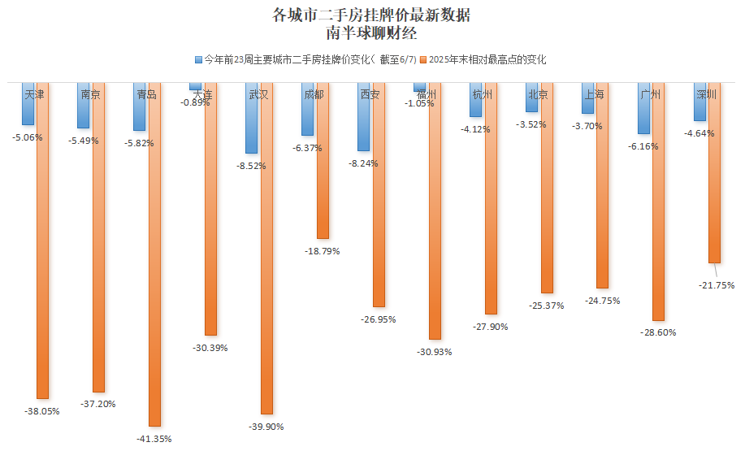
一句话核心：全国挂牌价还在每周 -0.2% 的速度阴跌，一线内部分化（沪穗周度反弹、京深续跌）；从最高点算，主要城市已累计跌去两到四成。
背景与关键数据：挂牌价是房东的"要价"，领先于成交价。第 23 周全国环比 -0.21%（年化约 -10%）。图中两个维度：今年前 23 周累计跌幅——武汉 -8.52%、西安 -8.24%、成都 -6.37%、广州 -6.16%、青岛 -5.82% 居前，一线中北京 -3.52%、上海 -3.70%、深圳 -4.64%；相对 2025 年末最高点的累计跌幅更触目：青岛 -41.35%、武汉 -39.90%、天津 -38.05%、南京 -37.20%、福州 -30.93%、大连 -30.39%，一线也有 -21.75%（深圳）至 -28.60%（广州）。
图片解读：双柱图（南半球聊财经自制）：蓝柱 = 今年前 23 周变化（截至 6/7），橙柱 = 相对最高点的变化。所有城市两根柱都是负的，强二线（杭州 -27.9%、成都 -18.79%）相对抗跌，弱二线普遍 -35% 以上。
为什么重要：上海、广州的周度反弹是否持续值得观察（可能与政策放松脉冲有关），但全国层面"以价换量"仍是主旋律。这是帖 6/8 中"租金下跌、CPI 服务项疲弱"的源头，也是帖 2"日本化"定价的最大底层逻辑——房地产不止跌，居民资产负债表就修不好，信贷需求就起不来。
延伸知识：挂牌价 vs 成交价的"剪刀差"：下行市中成交价通常比挂牌价低 5-10%（议价空间扩大），所以挂牌价指数会低估实际跌幅；但挂牌价的"方向变化"非常灵敏，适合做拐点观察。日本经验：东京公寓价格从 1991 年顶部跌了约 60%，用了 14 年见底——对照中国弱二线已跌 40%，可以理解 Jason 持续跟踪这组数据的用意。
今日全图索引
| 帖号 | 时间 | 主题 | 标签 | 图片文件 |
|---|---|---|---|---|
| 1 | 15:39 | 本科生"回炉"读技校 | #职业# | post1_img1 |
| 2 | 15:26 | 中国债券收益率"日本化" | #金融# | post2_img1 |
| 3 | 15:24 | Kalshi：霍尔木兹海峡正常化概率 | #金融# | post3_img1 |
| 4 | 15:19 | 降社保缴费的供应链溢出（论文） | #论文或书籍推荐# | post4_img1~2 |
| 5 | 15:14 | JPM 中国财富监管电话会 | #金融# | post5_img1 |
| 6 | 15:03 | 巴克莱：上游成本冲击型通胀 | #经济数据# | post6_img1~2 |
| 7 | 14:59 | SpaceX 等巨型 IPO 抽水效应 | #金融# | post7_img1~5 |
| 8 | 14:50 | 广发：模拟 GDP 平减指数 2.28% | #经济数据# | post8_img1 |
| 9 | 14:40 | 长江：PPI 超预期但传导不畅 | #经济数据# | post9_img1 |
| 10 | 14:37 | 全球主权债发行创纪录 | #金融# | post10_img1~2 |
| 11 | 14:33 | JPM：市场同时交易四条线 | #金融# | post11_img1 |
| 12 | 14:26 | 花旗："六大网络"与 K 型复苏 | #经济数据# | post12_img1 |
| 13 | 14:21 | 大摩：美联储立场对中国的含义 | #金融# | post13_img1~5 |
| 14 | 14:08 | 伊朗局势：护航、SPR 与袭击警告 | #金融# | post14_img1~9 |
| 15 | 13:22 | 中指院：1-5 月法拍市场 | #房价# | post15_img1~2 |
| 16 | 13:20 | 国信达：第 23 周二手房挂牌价 | #房价# | post16_img1 |
数据来源：知识星球「南半球聊财经」Jason 不跪 2026-06-10 当日帖子；图片原图存于
jason_images/2026-06-10/。